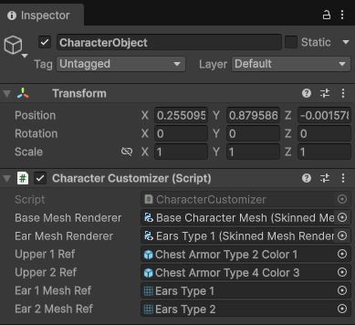
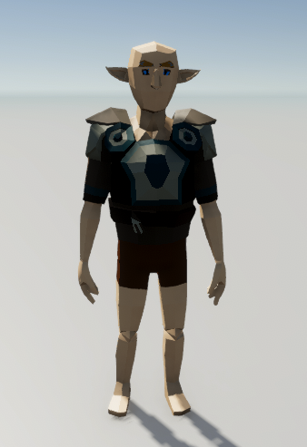

| 캐릭터 파츠를 변경하는 샘플 코드를 Addressables로 수정 해보겠습니다. 캐릭터 파츠를 변경하는 샘플 코드는 unity_character/tutorial01.html에 있는 코드입니다. 기존 코드CharacterCustomizer 클래스를 한번 보실까요? 예전 CharacterCustomizer.cs 파일 using System.Collections.Generic;
using UnityEngine; public enum PartType { Upper, Pants, Gloves, Shoes, Ear } public class CharacterCustomizer : MonoBehaviour { [SerializeField] SkinnedMeshRenderer baseMeshRenderer; [SerializeField] SkinnedMeshRenderer earMeshRenderer; private Dictionary<PartType, SkinnedMeshRenderer> equippedParts = new(); [SerializeField] SkinnedMeshRenderer upper1; [SerializeField] SkinnedMeshRenderer upper2; [SerializeField] Mesh ear1; [SerializeField] Mesh ear2; public void EquipMesh(PartType type, Mesh partPrefab) { earMeshRenderer.sharedMesh = partPrefab; } public void EquipPart(PartType type, SkinnedMeshRenderer partPrefab) { // 기존 파츠 제거 if (equippedParts.ContainsKey(type)) { Destroy(equippedParts[type].gameObject); } // 새 파츠 생성 var newPart = Instantiate(partPrefab, transform); newPart.rootBone = baseMeshRenderer.rootBone; newPart.bones = baseMeshRenderer.bones; equippedParts[type] = newPart; } void Update() { if (Input.GetKeyDown(KeyCode.Alpha1)) EquipPart(PartType.Upper, upper1); if (Input.GetKeyDown(KeyCode.Alpha2)) EquipPart(PartType.Upper, upper2); if (Input.GetKeyDown(KeyCode.Alpha3)) EquipMesh(PartType.Ear, ear1); if (Input.GetKeyDown(KeyCode.Alpha4)) EquipMesh(PartType.Ear, ear2); } } 어드레서블로 변경된 CharacterCustomizer 클래스입니다. CharacterCustomizer.cs using System.Collections.Generic;
using UnityEngine; using UnityEngine.AddressableAssets; // 필수 using UnityEngine.Rendering; using UnityEngine.ResourceManagement.AsyncOperations; // 필수 public enum PartType { Upper, Pants, Gloves, Shoes, Ear } public class CharacterCustomizer : MonoBehaviour { [SerializeField] SkinnedMeshRenderer baseMeshRenderer; [SerializeField] SkinnedMeshRenderer earMeshRenderer; // 인스턴스화된 객체를 관리 (해제용) private Dictionary<PartType, GameObject> spawnedParts = new(); // 어드레서블 로딩 상태 및 메모리 해제용 핸들 private Dictionary<PartType, AsyncOperationHandle<GameObject>> partHandles = new(); // 이제 프리팹 대신 '참조'를 인스펙터에 노출합니다. [SerializeField] AssetReference upper1Ref; [SerializeField] AssetReference upper2Ref; [SerializeField] AssetReference ear1MeshRef; // Mesh 전용 참조 [SerializeField] AssetReference ear2MeshRef; public void EquipMesh(PartType type, AssetReference meshRef) { if (meshRef == null || !meshRef.RuntimeKeyIsValid()) return; if (meshRef.OperationHandle.IsValid()) { Addressables.Release(meshRef.OperationHandle); } // AssetReference를 사용할 때는 어떤 타입으로 로드할지 <Mesh>를 명시해줘야 합니다. meshRef.LoadAssetAsync<Mesh>().Completed += (handle) => { if (handle.Status == AsyncOperationStatus.Succeeded) { earMeshRenderer.sharedMesh = handle.Result; } }; } public void EquipPart(PartType type, AssetReference partRef) { if (partRef == null || !partRef.RuntimeKeyIsValid()) return; // 1. 기존 파츠 및 핸들 해제 (메모리 누수 방지 핵심!) ReleasePart(type); // 2. 비동기 생성 시작 var handle = partRef.InstantiateAsync(transform); partHandles[type] = handle; handle.Completed += (op) => { if (op.Status == AsyncOperationStatus.Succeeded) { GameObject newPartObj = op.Result; if (newPartObj.TryGetComponent<SkinnedMeshRenderer>(out var nSmr)) { nSmr.rootBone = baseMeshRenderer.rootBone; nSmr.bones = baseMeshRenderer.bones; } spawnedParts[type] = newPartObj; } }; } private void ReleasePart(PartType type) { if (partHandles.ContainsKey(type)) { // Addressables를 통해 생성된 객체는 반드시 Addressables.ReleaseInstance로 지워야 합니다. Addressables.ReleaseInstance(partHandles[type]); partHandles.Remove(type); spawnedParts.Remove(type); } } void Update() { if (Input.GetKeyDown(KeyCode.Alpha1)) EquipPart(PartType.Upper, upper1Ref); if (Input.GetKeyDown(KeyCode.Alpha2)) EquipPart(PartType.Upper, upper2Ref); if (Input.GetKeyDown(KeyCode.Alpha3)) EquipMesh(PartType.Ear, ear1MeshRef); if (Input.GetKeyDown(KeyCode.Alpha4)) EquipMesh(PartType.Ear, ear2MeshRef); } // 오브젝트 파괴 시 전체 메모리 해제 private void OnDestroy() { foreach (var key in new List<PartType>(partHandles.Keys)) { ReleasePart(key); } } } 인스펙트창에서 upper1Ref, upper2Ref, ear1MeshRef, ear2MeshRef 값은 어드레스블이 체크된 리소스로 드래그 합니다.  실행 화면은 다음과 같습니다.  기존 코드와 Addressable이 적용된 코드를 하나하나 비교 해보겠습니다. 헤더 추가using UnityEngine.AddressableAssets;
using UnityEngine.ResourceManagement.AsyncOperations; 오브젝트 Dictionary기존private Dictionary<PartType, SkinnedMeshRenderer> equippedParts = new();
Addressableprivate Dictionary<PartType, GameObject> spawnedParts = new();
private Dictionary<PartType, AsyncOperationHandle<GameObject>> partHandles = new(); partHandles은 어드레서블 로딩 상태 및 메모리 해제용 핸들입니다. 자세한 설명은 마지막에 Addressables.ReleaseInstance에서 자세하게 설명 하겠습니다. AsyncOperationHandle 핸들이 필요한 이유는 비동기 처리이기도 하고, 로딩중에 취소 할수도 있기 때문에 핸들을 별도로 들고 있는게 좋습니다. 인스펙트뷰의 참조 오브젝트기존[SerializeField] SkinnedMeshRenderer upper1;
Addressable[SerializeField] SkinnedMeshRenderer upper2; [SerializeField] Mesh ear1; [SerializeField] Mesh ear2; [SerializeField] AssetReference upper1Ref;
[SerializeField] AssetReference upper2Ref; [SerializeField] AssetReference ear1MeshRef; [SerializeField] AssetReference ear2MeshRef; Addressable 지정이 안된 게임오브젝트를 참조하면 실행중에 에러가 발생합니다. EquipMesh 처리기존 코드public void EquipMesh(PartType type, Mesh partPrefab)
Addressable{ earMeshRenderer.sharedMesh = partPrefab; } public void EquipMesh(PartType type, AssetReference meshRef)
{ if (meshRef == null || !meshRef.RuntimeKeyIsValid()) return; if (meshRef.OperationHandle.IsValid()) { Addressables.Release(meshRef.OperationHandle); } meshRef.LoadAssetAsync<Mesh>().Completed += (handle) => { if (handle.Status == AsyncOperationStatus.Succeeded) { earMeshRenderer.sharedMesh = handle.Result; } }; } meshRef.LoadAssetAsync<Mesh>().Completed로 비동기 로딩이 완료되면 sharedMesh를 지정합니다. Mesh는 핸들을 해제하지 않고 로딩하면 접근 에러가 발생합니다. Addressables.Release(meshRef.OperationHandle); 왜 InstantiateAsync는 괜찮은데 LoadAssetAsync는 안 터질까?
AssetReference에 대해 LoadAssetAsync를 중복 호출했기 때문에 중복 에러가 발생합니다. 그래서, meshRef.OperationHandle을 해제 해야 합니다. EquipPart 처리기존 코드public void EquipPart(PartType type, SkinnedMeshRenderer partPrefab)
Addressable{ // 기존 파츠 제거 if (equippedParts.ContainsKey(type)) { Destroy(equippedParts[type].gameObject); } // 새 파츠 생성 var newPart = Instantiate(partPrefab, transform); newPart.rootBone = baseMeshRenderer.rootBone; newPart.bones = baseMeshRenderer.bones; equippedParts[type] = newPart; } public void EquipPart(PartType type, AssetReference partRef)
{ if (partRef == null || !partRef.RuntimeKeyIsValid()) return; // 1. 기존 파츠 및 핸들 해제 (메모리 누수 방지 핵심!) ReleasePart(type); // 2. 비동기 생성 시작 var handle = partRef.InstantiateAsync(transform); partHandles[type] = handle; handle.Completed += (op) => { if (op.Status == AsyncOperationStatus.Succeeded) { GameObject newPartObj = op.Result; if (newPartObj.TryGetComponent<SkinnedMeshRenderer>(out var nSmr)) { nSmr.rootBone = baseMeshRenderer.rootBone; nSmr.bones = baseMeshRenderer.bones; } spawnedParts[type] = newPartObj; } }; } 비동기 처리라서 로딩이 완료되면 새파츠 생성을 처리하고 있습니다. 객체 릴리즈기존Destroy(equippedParts[type].gameObject);
Addressableprivate void ReleasePart(PartType type)
{ if (partHandles.ContainsKey(type)) { // Addressables를 통해 생성된 객체는 반드시 Addressables.ReleaseInstance로 지워야 합니다. Addressables.ReleaseInstance(partHandles[type]); partHandles.Remove(type); spawnedParts.Remove(type); } } Addressables.ReleaseInstance()에서 partHandles 대신 spawnedParts로 ReleaseInstance 가능합니다. 그럼에도 불구하고 '핸들'로 ReleaseInstance 해야 하는 예외 상황이 있습니다. 1. 로딩 도중에 취소할 때 만약 에셋이 너무 커서 로딩하는 데 3초가 걸린다고 가정해 봅시다.
만약 나중에 LoadAssetsAsync(복수형)를 써서 "Stage1에 등장하는 몬스터 10마리"를 한꺼번에 불러온다면?
어떻게 1:N 해제가 가능한가요?유니티 어드레서블 시스템은 "한 번의 로딩 작업(Handle)"이 만들어낸 모든 결과물을 내부적으로 묶어서 관리합니다.코드 예를 하나 더 들어 보겠습니다. AsyncOperationHandle<IList<GameObject>> groupHandle;
void LoadMonsters() { // "Stage1" 태그가 붙은 모든 에셋을 로드 groupHandle = Addressables.LoadAssetsAsync<GameObject>("Stage1", (monster) => { // 로드될 때마다 한 마리씩 생성 (여기서 10마리가 생성된다면) Instantiate(monster); }); } void ClearStage() { // 이 핸들 하나만 놓아주면, "Stage1"로 로드된 10종류의 에셋 참조가 모두 해제됩니다. Addressables.Release(groupHandle); } 주의할 점: Instantiate vs InstantiateAsync 여기서 헷갈리지 말아야 할 중요한 포인트가 하나 있습니다.
코드: old_CharacterCustomizer.cs CharacterCustomizer.cs |